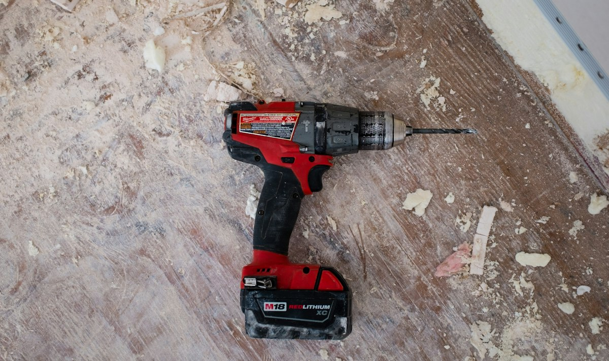

Personalização
Possibilidades que dialogam com diferentes estilos e formas de viver.

DESIGN · ELEGÂNCIA · PERSONALIZAÇÃO
QUEIROZ NETO
Uma proposta de marcenaria que valoriza cada detalhe, unindo estética, funcionalidade e personalidade em ambientes planejados.
Site demonstrativo · Imagens e informações sujeitas à confirmação da empresa.
01 / CONCEITO
O detalhe faz a diferença.ESSÊNCIA & POSSIBILIDADES
A Marcenaria Queiroz Neto ganha, nesta demonstração, um espaço digital para apresentar seus trabalhos, destacar possibilidades de personalização e facilitar o contato com novos clientes.
Cada ambiente possui necessidades e características próprias. Um portfólio bem organizado permite explorar inspirações e conhecer diferentes possibilidades de móveis sob medida.
CONHEÇA OS AMBIENTES ↗02 / ESPAÇOS PARA VIVER
Explore possibilidades de móveis planejados para diferentes espaços.Categorias ilustrativas. Serviços sujeitos à confirmação.
03 / GALERIA DE INSPIRAÇÕES
Inspirações para seu próximo ambiente.
Inspirações ilustrativas — imagens demonstrativas.UM REPERTÓRIO DE POSSIBILIDADES · Fotografias reais autorizadas poderão compor a versão definitiva.
04 / MATERIALIDADE
Toque, luz e tonalidade em diferentes composições.
Selecione uma textura para explorar.
05 / EQUILÍBRIO EM CADA ESCOLHA
Possibilidades que dialogam com diferentes estilos e formas de viver.
Um olhar para as proporções, a organização e o uso de cada ambiente.
Inspirações que aproximam a beleza das necessidades do dia a dia.
Texturas, linhas e combinações que dão personalidade à composição.
06 / SUA IDEIA É O PONTO DE PARTIDA
Descreva o ambiente que deseja planejar.
Prepare seu pedido para envio pelo WhatsApp.
Entre em contato para conhecer as possibilidades.
A empresa poderá orientar o atendimento conforme seus processos reais.

IMAGINE. INSPIRE-SE. TRANSFORME.
Explore possibilidades para transformar suas ideias em
ambientes cheios de personalidade.
07 / VAMOS CONVERSAR
Compartilhe sua ideia.
O primeiro detalhe começa com você.
São Sebastião do Paraíso — Minas Gerais
(35) 99236-5888 ↗Telefone e integração de WhatsApp provisórios.